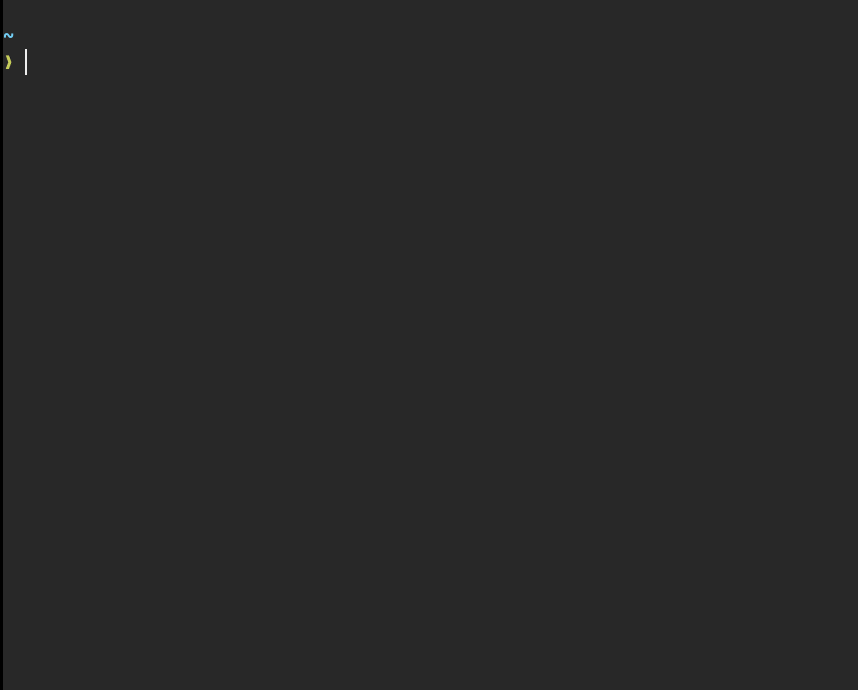

A tui file manager with vim-like key mapping, written in Rust.

While heavliy inspired by the great vifm and trying to implement its pleasant experience in Rust, at the same time this project focuses on the following points:
Before you do the following, make sure gcc is installed.
from crates.io:
cargo install felix
or from GitHub repository:
git clone https://github.com/kyoheiu/felix.git
cd felix
cargo install --path .
| command | |
|---|---|
fx | Show items in the current directory. |
fx <directory path> | Show items in the path. Both relative and absolute available. |
| Key | Explanation |
|---|---|
| j / Key Up | Go up. If the list exceeds max-row, list "scrolls" before the top of the list. |
| k / Key Down | Go down. If the list exceeds max-row, list "scrolls" before the bottom of the list. |
| h / Key Left | Go to parent directory if exists. |
| l / Key Right / Enter | Open file or change directory. Commands for execution can be managed in config file. |
| gg | Go to the top. |
| G | Go to the bottom. |
| dd | Delete and yank item (item will go to the trash directory). |
| yy | Yank item. If you yanked other item before, its information is replaced by this one. |
| p | Put yanked item(s) in the current directory. If item with same name exists, copied item will be renamed with the suffix "_copied". |
| V | Switch to select mode, where you can move cursor to select items. |
| d (select mode) | Delete and yank selected items, and return to normal mode. |
| y (select mode) | Yank selected items, and return to normal mode. |
| t | Toggle sort order (by name <-> by modified time). This change remains until the program ends (sort order will be restored as configured). |
| : | Switch to shell mode (experimantal). Type command and press Enter to execute it. You can use any command in the displayed directory, but it may fail to execute the command (e.g. cd doesn't work for now), and also the display of items may collapse during execution. |
| c | Switch to rename mode (enter new name and press Enter to rename the item). |
| / | Switch to filter mode (enter keyword and press Enter to go to filtered list). |
| Esc | Return to normal mode. |
| :e | Reload the current directory. Useful when something goes wrong in filter mode (e.g. no matches) or shell mode. |
| :empty | Empty the trash directory. Please think twice before using this command. |
| :h | Show help. |
| :q / ZZ | Exit the program. |
Note that items moved to the trash directory are prefixed with Unix time (like 1633843993) to avoid name conflict. This prefix will be removed when paste.
| config file | $XDG_CONFIG_HOME/felix/config.toml |
| trash directory | $XDG_CONFIG_HOME/felix/trash |
Default config file, which is here, will be created automatically when you launch the program for the first time.
In config.toml, you can set:
If you write
default = "nvim"
[exec]
feh = ["jpg", "jpeg", "png", "gif", "svg"]
zathura = ["pdf"]
then, .jpg, .jpeg, .png, .gif and .svg files are opened by feh <file-name>, .pdf files by zathura <file-name> and others by nvim <file-name> .